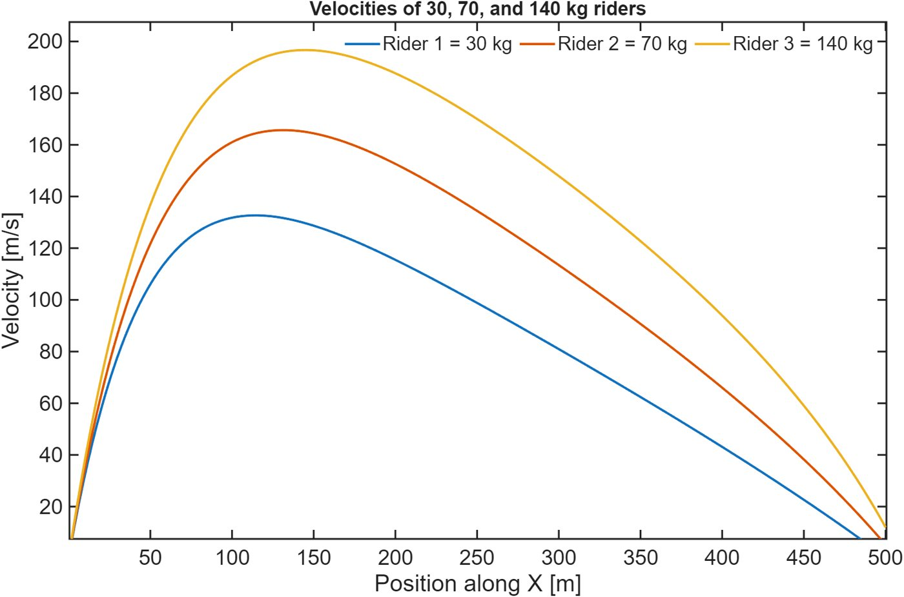

Zipline Velocity, Constrained Optimization
How fast can a zipline be while staying safe for every rider? I modeled a rope that changes shape under the rider, then searched the design space for the drop and tension that maximize peak speed.

- TYPE
- Individual technical write-up
- INSTRUCTORS
- Profs. Bassman & Yong
- TOOLS
- MATLAB · fsolve · ODE integration · fmincon
- CONSTRAINTS
- T ≤ 50 kN · drop 10–40 m · exit ≤ 5 m/s
The problem
A zipline isn’t a straight line. Gravity pulls the rope into a catenary, and the rider’s own weight reshapes it as they travel — so the slope of the rope at any point depends on where the rider is. Using the equations from a study on rope tensions, the task was to choose two decision variables (vertical drop and rope tension) to maximize a 70 kg rider’s peak speed over a 500 m span.
The catch: the same design has to work for 30, 70 and 140 kg riders. None of them can stall before the end, and none can arrive faster than 5 m/s.
Method
- 01 Solve the rope shape Relating the start angle and rider weight to dimensionless parameters a₀ and b₀ gave three equations in three unknowns (a₀, b₀, rope length). MATLAB’s fsolve found them, which fixes the zipline’s geometry.
- 02 Trace the rider’s speed Stepping the rider’s fractional position f from 0 to 1, I recomputed the deformed path and its slope, then integrated the velocity ODE with gravity and aerodynamic drag (A = 0.05·m2/3).
- 03 Optimize with penalties fmincon searched drop and tension for the highest peak speed, with a penalty method pushing the solver away from designs where any rider stalls or exits too fast.
Results

| RIDER | PEAK | EXIT |
|---|---|---|
| 30 kg | 11.52 m/s | 0.61 m/s |
| 70 kg | 12.87 m/s | 2.23 m/s |
| 140 kg | 14.02 m/s | 3.46 m/s |
The optimum sits on the 40 m drop bound: the solver pushed as far as the constraints allowed without any rider stalling or exceeding 5 m/s.
Assumptions
No rope friction or wind, uniform rope density, constant rider posture and zero initial velocity. These hold if operators enforce standard riding rules and close in high wind, and if trolley bearings are engineered to make friction negligible.
What I took away
Optimization was my favorite part of the course and the tool I expect to use most as an engineer. Being able to apply what we learned in MATLAB to a physical system with real safety limits made it click.